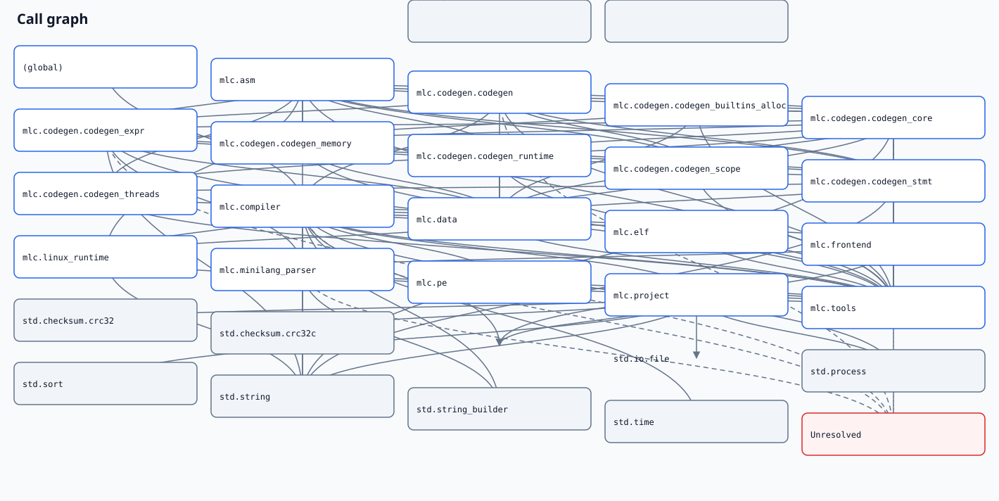

Call graph
Conservative static call relationships; dashed edges are not exact. Repeated relationships are aggregated by package.

Conservative static call relationships; dashed edges are not exact. Repeated relationships are aggregated by package.
